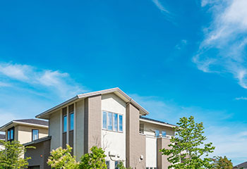
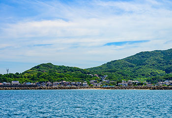
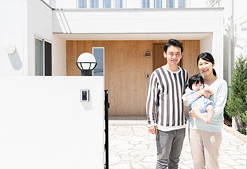

- トップ
- 福津市・宗像市の特徴
福津市と宗像市の不動産売却
九州北部、福岡県内にある福津市と宗像市は、現在不動産市場が盛り上がりを見せるエリアです。いずれも市外・県外からの移住者が多いにもかかわらず、住まいが足りていない状況が続いています。需要過多な状況は不動産売却におけるチャンス。こちらでは、ひかり不動産が福津市と宗像市の不動産事情についてご紹介します。
福津市・宗像市の不動産事情
福岡の中心都市とも言える博多を有した福岡市は、地価も高く戸建ての購入には高いハードルがあります。一方、都心から少し離れた地域については価格的にも条件的にも現実的になるのが特徴です。
そのなかでも、福津市と宗像市は不動産購入に最適な地域と言えます。南西に向かえば博多があり、北東へ向かえば北九州へもアクセス可能。九州の大都市のちょうど真ん中に位置しており、立ち位置としては「程よい郊外・田舎」というイメージです。
両市にはとくに子育て世帯の移住が目立ちます。こうした状況を踏まえて、区画整理も進み、近年は発展を続けています。ただし、人口増加はそのまま不動産価格の上昇も招きます。現在は、需要に供給が追いついていないような状況です。そのため、このエリアで不動産を売却に出せば、ある程度強気の価格であっても買い手がつきやすい状態です。 以下からは、それぞれの市の特徴や近年の傾向を解説します。
福津市の特徴
住みよさランキング2位連続九州1位
福津市は、東洋経済新報社が公官庁発表の公的統計をまとめ総合評価をした「住みよさランキング」の2018年版において九州エリア第1位を獲得しました。実は1位獲得は2017年版に続いて2年連続。ちなみに、全国でも12位にランクインしています。
住みよさランキングは、安心度・利便度・快適度・富裕度・住民水準充実度の5項目を基準としています。福津市はこれらがすべて高水準であったため、総合的に高い評価を得たと言えます。
東京中央区に次ぐ人口増加率
福津市は10～20年の間、人口が右肩上がりで増加している地域です。この増加率は、なんと東京都中央区に次いで第2位でした（2018年）。なお、人口増加の理由は明らかに転入者・移住者の数が多いことが理由です。
とくに子育て世代を中心とした若者世代が多く移住している傾向にあります。アクセスが良く、都心（博多）へ通勤もでき、同じような移住者が多い環境が更なる移住者を呼んでいるのかも知れません。
豊かな自然と充実した施設
近年の福津市はイオンモール福津のオープンや区画整理によって、「漁師の町」というイメージから「おしゃれな街」へと変わってきています。とくに津屋崎と宮司浜は人気のエリアで、若者に人気。また、駅周辺も充実しているため、買い物にも困りません。
そして、元々の自然が残っている点も魅力のひとつです。美しい海や山は見ているだけで心が癒やされるという声もあり、便利だけどのんびりした暮らしに憧れる層にはぴったりのエリアと言えるでしょう。
需要増加と市場価値上昇

さまざまな魅力が詰まった福津市では、多くの人が転入してきます。そのため現在は、需要に対して供給が追いついていない状態です。加えて、前述のとおり「おしゃれな街」というイメージもあり、市場価値が年々上昇傾向にあります。平均より高めの物件でも比較的すぐに売れる状況ですので、市内に売却したい不動産をお持ちの方は、ぜひ現在の価値を確かめてみましょう。
宗像市の特徴
暮らしにちょうどいい街

宗像市は博多や小倉へJRで40分。アクセス至便な立地が魅力のエリアです。都心部で働く人も住んでおり、人口も上昇傾向にあります。国道3号線沿いにドン・キホーテなどの商業施設もあり、買い物にも困りません。また、福津市と同じく海や川、山や森といった自然の豊かさも魅力です。さらには美味しい食材も豊富。人が穏やかに暮らすための条件が揃ったちょうどいい街と言えるでしょう。
福津市の次は宗像市？

住みよいランキング上位の福津市は近年、人口増加に伴って不動産価格も上昇傾向にあります。一方の宗像市も近年になり人口が増加しているものの、福津市に比べればまだまだ安価。もちろん、福岡市と比較した場合にもかなり安くマイホームが手に入ります。福津市の人気の高まりと同様、宗像市も今後、更なる発展が見込めます。こうした状況が広まれば、不動産価格も上昇し、売却の際にも有利となるでしょう。
Pickup! 今が不動産の売り時です！
上述のとおり、福津市と宗像市の不動産市場が現在盛り上がりの最中といった状況です。転入の量に対して住居が足りておらず、安価ではあるものの人気エリアは激しい競争が起こっています。供給不足の状況は、不動産売却において大きなプラス要素です。しっかりと現況を見極めて条件を設定していけば、納得のいく不動産売却が実現できると期待できるでしょう。
もしも「両親から福津市や宗像市の実家を譲り受けたが、どう扱えばいいか分からず困っている……」という方がいらっしゃったら、ぜひ当社までご相談ください。地域情報を知り尽くした当社であれば、条件に応じたベストな売却方法をご提案できます。まずは一度、お気軽にご相談ください。
リンク指示
不動産基礎知識に関するその他ページは